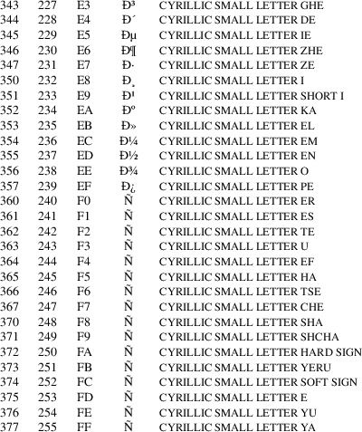

cp1251 − CP 1251 character set encoded in octal, decimal, and hexadecimal
The Windows Code Pages include several 8-bit extensions to the ASCII character set (also known as ISO 646-IRV). CP 1251 encodes the characters used in Cyrillic scripts.
CP 1251
characters
The following table displays the characters in CP 1251
that are printable and unlisted in the ascii(7)
manual page.

CP 1251 is also known as Windows Cyrillic.
ascii(7), charsets(7), cp1252(7), iso_8859−5(7), koi8−r(7), koi8−u(7), utf−8(7)